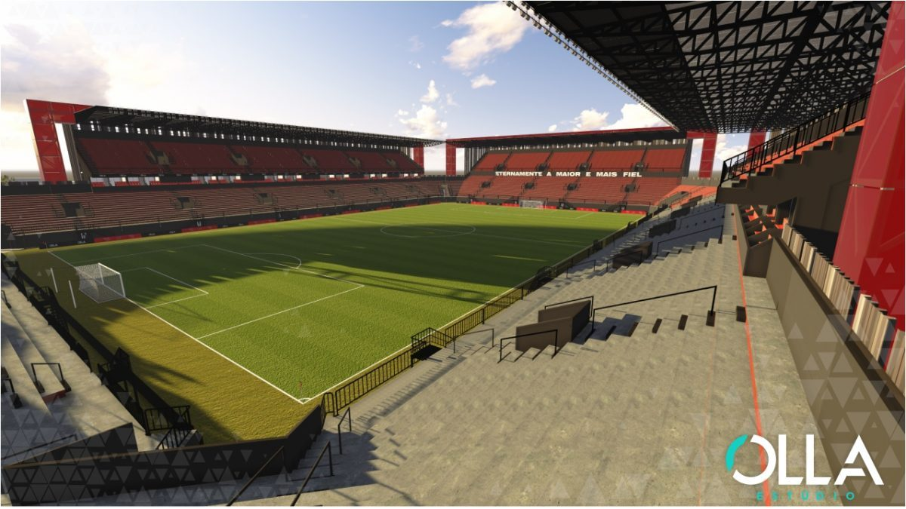

Logo quando começou com as atividades esportivas, o Brasil não possuía um local para chamar de ‘casa’. Porém, apenas cinco anos após a fundação, em 1916, o clube inaugurou um vasto pavilhão social, que também era chamado, naquele tempo, de ‘Praça de Esportes’. A tal sede, localizada no bairro Simões Lopes, foi construída toda em pedra de granito e madeira, e tinha capacidade para acomodar dois mil torcedores, um número muito significativo naquele tempo. Além das arquibancadas, o primeiro estádio do Brasil comportava copa, secretaria, sala para o departamento médico, rouparia e vestiários. A Praça de Esportes do Brasil, que depois virou ‘Campo do Bancário’ e por último ganhou o nome de ‘CT Rubro-negro’, também tinha uma peculiaridade muito interessante: um Coreto. Uma construção com piso a altura de aproximadamente um metro do chão, de forma arredondada ou oitavada. Enfim, era uma espécie de palco, que recebia os grupos musicais responsáveis pelo entretenimento do público antes de a partida começar.
A utilização do Coreto é uma prova mais do irrefutável de que o Brasil sempre foi um clube do povo, com uma torcida capaz de transformar um simples jogo de futebol em um grande espetáculo. O mais impressionante é que, mesmo com o passar dos anos, essa tradição de festa nas arquibancadas ainda faz parte do folclore rubro-negro. A diferença é que no lugar das bandas pomposas entrou a Charanga, dando o tom direto das arquibancadas. Sem falar que atualmente o Brasil possui um local apropriado para receber tanta euforia: o estádio Bento Freitas.
O Bento Freitas, também conhecido como a Baixada, foi inaugurado no dia 23 de maio de 1943, com a realização de um amistoso entre Brasil e Força Luz, de Porto Alegre. Naquela ocasião, o jogo foi considerado um grande acontecimento esportivo. E a torcida Xavante, já numerosa, comemorou emocionada a conquista da nova casa.
Atualmente o estádio Xavante ocupa uma extensão de 29.730m2, sendo que 23.254m2 é de área construída, incluindo 4 bilheterias, 7 portões de acesso, 6 lanchonetes, 17 banheiros e 13 cabines de imprensa. Para os atletas profissionais são 3 vestiários, sala de musculação, sala do Depto Médico, refeitório e alojamento com 10 dormitórios, sala de áudio e vídeo e de lazer.
Projeto para o futuro
Maquete do novo Bento Freitas
Acima está a imagem de uma maquete, onde nela vemos como será o estádio no futuro. Atualmente o estádio está sendo remodelado pois em um jogo contra o Flamengo o estádio cedeu uma parte e foi preciso derrubar a antiga estrutura. Com isso, a diretoria se viu obrigada a lançar um projeto de um novo estádio, muito mais moderno e bonito, porém sem perder a sua essência.
Com isso, fez-se uma parceria com a empresa Porto5, onde a empresa se comprometeu a fazer a reconstrução do novo Bento Freitas em troca de um terreno na cidade. Atualmente a obra está na sua fase 4, onde já se concluiu quase todo anel inferior, e estima-se que para o ano de 2021 possa estrear com a torcida novamente nos estádios.